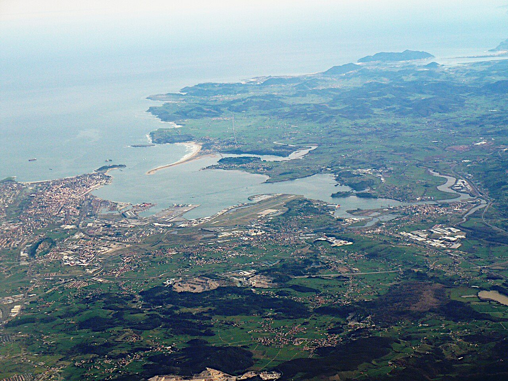
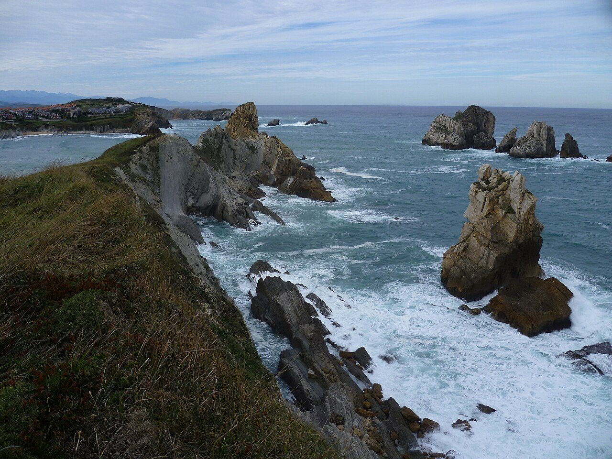

La costa cantábrica
Criterios: PN 1.1, PN 6.1
🤔 Pienso5 min
Qué hago aquí: Piensa un momento y contesta con lo que ya sabes. No pasa nada si no lo sabes: es para empezar.
Las olas golpean la costa todos los días, desde hace millones de años. ¿Qué crees que les hacen a las rocas?
📖 Leo y aprendo15 min
Qué hago aquí: Lee despacio, mira los dibujos y los ejemplos, y quédate con la idea clave del final.
La costa de Cantabria mide más de 200 km, de Tina Mayor (en el límite con Asturias) a Ontón (en el límite con Bizkaia). Es una costa alta y recortada: tiene acantilados, cabos que entran en el mar, ensenadas y bahías, islotes y la desembocadura de los ríos en forma de rías.

Foto: Tony Rotondas · CC BY-SA 3.0 · Bahía de Santander, vista aérea.jpg
El mar modela la costa sin parar. Las olas erosionan (desgastan) las rocas más blandas y dejan las más duras como cabos e islotes; después transportan la arena y los cantos y los depositan en las zonas tranquilas, donde se forman las playas.

Foto: AnaisGoepner · CC BY-SA 4.0 · Costa Quebrada PNatural Dunas de Liencres-Cantabria-Spain (2).jpg
✏️ Hago25 min
Qué hago aquí: Haz las actividades en orden. Empieza siempre por las básicas.
Explica la diferencia entre una costa alta y recortada y una costa baja y rectilínea. ¿Cuál es la de Cantabria? Da tres pruebas tomadas de la ficha.
Explica las tres acciones del mar (erosión, transporte y depósito) y di qué forma de la costa produce cada una.
¿Por qué el mar deja unas rocas como cabos e islotes y desgasta otras formando bahías? Usa las palabras roca dura y roca blanda.
Explica qué es una rasa litoral y qué prueba nos da sobre el nivel del mar en el pasado.
Explica cómo se han formado los urros de Liencres: dibuja en tres viñetas la evolución de un cabo hasta convertirse en un islote.
✏️ Puedes responder escribiendo, con un dibujo o un esquema, o contándolo en voz alta.
En la costa hay casas al borde de los acantilados. Explica el riesgo con lo que sabes de la erosión y redacta dos normas para un ayuntamiento costero.
Explica por qué se ha propuesto Costa Quebrada como geoparque. ¿Qué la hace valiosa como patrimonio aunque no tenga monumentos?
🚀 Amplío (si quieres saber más)
Qué hago aquí: ¿Has terminado? Lee la curiosidad o elige el reto. Es voluntario.
En una vista de satélite, recorre la costa entre Liencres y la Virgen del Mar. Haz un croquis con al menos tres playas, dos islotes y un cabo. Mide con la herramienta de distancias la longitud en línea recta y la longitud siguiendo la costa: ¿cuántas veces más larga es la costa? ¿Qué te dice eso de lo recortada que es?
✅ Compruebo5 min
Qué hago aquí: Contesta sin mirar la ficha y marca cómo lo llevas.